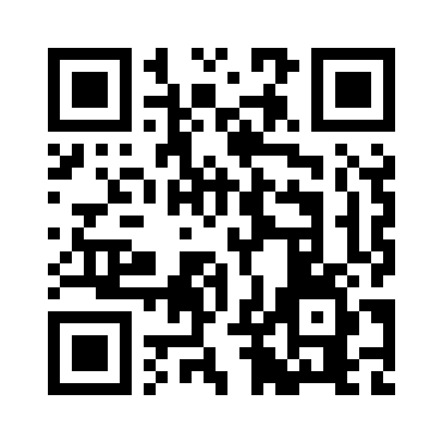

PSY240H5 F · Lecture 6 · 14 October 2026 · after the midterm
A randomised controlled trial, run by this class, on this class
Four weeks, about five minutes a day. Have the device you'll use each day in your hand.
Start here

radlab.zone/join/classtrial
What happens next
Consent
Stuck? Put your hand up, or write to psy240@radlab.zone.